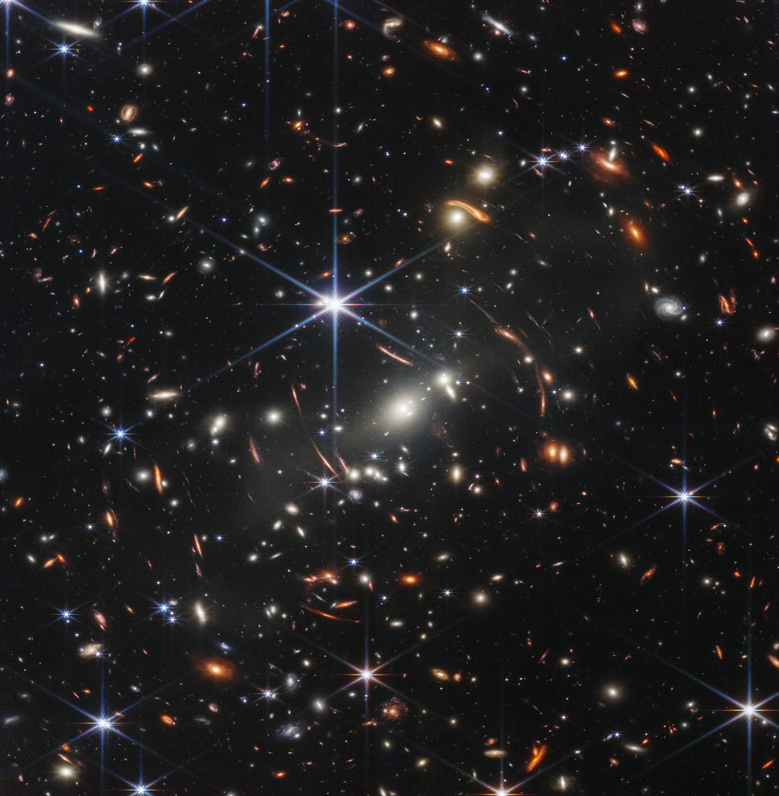
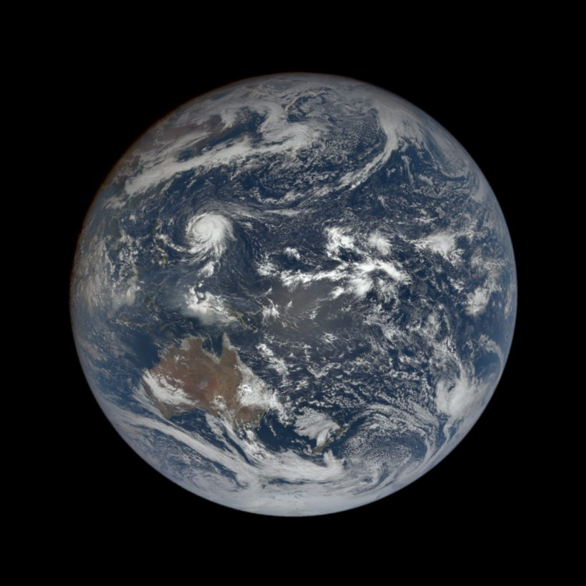
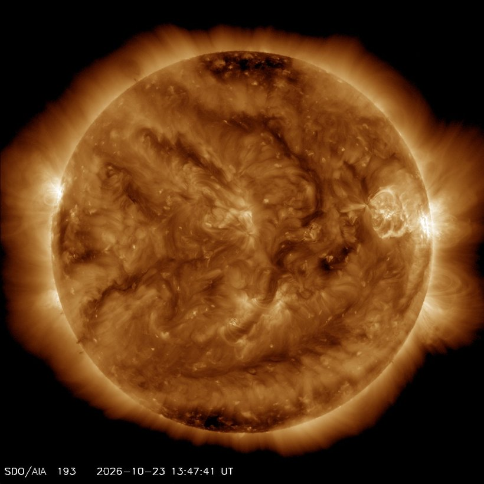

FEATURED STORY
一千个星系，挤在一枚沙粒大小的天空里
2022 年 7 月，詹姆斯·韦伯太空望远镜发布了它的第一张全彩深空场——星系团 SMACS 0723。这片天区广为人知的参照物是：你伸直手臂看到的一粒沙子。而韦伯在里面拍到了成千上万个星系，每一个都由数千亿颗恒星组成。光线穿越了 46 亿年才抵达镜面，这是人类迄今拍到的「最深」的宇宙红外图像。
DEEP SPACE
深空图库
恒星死亡时抛出的尘埃，会在几万年后重新聚成新的太阳。这里收藏的每一帧，都是某个世界临终或初生的瞬间。
光在宇宙里走了一万年，我们只用一眼就看完了。
该类目暂无影像。
THE RED PLANET
红色星球
四十亿年前，这里也曾有河流与海洋。如今只剩铁锈色的荒漠和稀薄的大气，却成了人类最想抵达的下一站。
我们把机器送去那里，是想知道——曾经有水的地方，会不会也曾经有过什么。
PALE BLUE DOT
蓝色家园
从四百公里的轨道回望，大气层薄得像一层发光的膜。所有的战争与诗歌、离别与重逢，都发生在这层膜里面。
旅行者一号在六十亿公里外回头，拍到一个不足一像素的蓝点。那是我们。
HUMAN FOOTPRINTS
人类足迹
火箭离塔的尾焰、月壤上的一枚鞋印、真空中悬浮着拧螺丝的人。六十多年里，我们把身体一次次推向那层薄膜之外。
那是一小步，却是整个物种的方向。
NASA VIDEO ARCHIVE
动态影像
照片冻结瞬间，影像让时间重新流动。火箭离塔的震颤、月面上的跳跃、舱外作业时手套的动作——有些东西，只有动起来才看得见。
时间不能倒流，但可以重播。
SOLAR SYSTEM
太阳系档案
一颗普通恒星，八颗行星。它们的大小、距离与公转周期，构成了我们所能理解的「家」的全部尺度。
把太阳缩成一颗柚子，地球就是十米外的一粒芝麻。
| 天体 | 直径 (km) | 平均距日 | 公转周期 | 卫星数 | 平均温度 |
|---|
航天大事记
LIVE ORRERY
实时太阳系仪
此刻，八颗行星正在各自的轨道上运行。你看到的位置不是示意图，而是按 JPL 轨道要素解算的真实坐标，误差小于 0.1°。
转到今天这一格，是你与它们真实共享的时刻。
轨道间距经压缩示意（非线性比例）· 行星大小为夸张显示
TONIGHT'S SKY
今晚观天指南
选一个城市、一个时刻，看看那时的头顶有什么。月相、行星高度、日出日落——天空每天都不一样，今晚只有一次。
抬头这件事，人类做了几十万年，还没做腻。
月相
太阳
观测建议
—
—
| 行星 | 视星等 | 所在方位 | 高度角 | 与太阳距角 | 状态 |
|---|
天象预告
LIVE FROM SPACE
实时太空
地球正在自转，太阳正在活动，野火正在燃烧，火箭正在加注。这些不是历史数据，是此刻正在发生的事。
宇宙不需要观众，但它恰好有一个。

—
这颗卫星停在太阳与地球之间的引力平衡点、距地球约 150 万公里处，每 1–2 小时回望一次地球。NASA 按天发布这些影像，通常比实时晚 1–3 天——下面这条时间轴，是最近一个完整观测日里的 8 个瞬间。

NASA SDO 卫星每 15 分钟拍一次太阳。下面那条曲线是 NOAA 测到的地磁 Kp 指数——数值越高，越可能出现极光。
排队中的发射，来自全球各家航天机构——SpaceX、中国航天、Rocket Lab、ISRO、ULA、阿丽亚娜。时间为北京时间。
半径是最近距离（对数刻度，最外圈 0.1 AU），角度是接近日期。虚线圆是月球轨道——落进圈里的，比月亮离我们还近。
横轴是公转周期、纵轴是行星半径（均为对数刻度），颜色代表发现方法。这里只画出了已有半径测量的行星——剩下那些只知道质量、还算不出大小的，暂时没有位置。
NASA EONET 每天从卫星观测里挑出正在发生的自然事件——野火、热带风暴、海冰。点上的位置就是事件中心的经纬度。
ABOUT THE DATA
关于数据
这里的每一幅影像、每一组坐标，都来自各国航天机构与天文数据中心公开发布的一手资料。我们不生产数据，只负责把它整理成看得懂的样子。
目前收录 189 幅影像、6 段动态影像、6050 颗已确认系外行星，以及持续更新的太阳活动、地球自然事件与全球发射日程。
数据来源：NASA（影像与视频、EPIC 地球、SDO 太阳、EONET 事件、系外行星档案）、JPL（小行星接近与轨道要素）、NOAA 空间天气预测中心（地磁指数与太阳风）、The Space Devs（全球发射日程）。
「实时太阳系仪」与「今晚观天指南」由站内天文引擎实时解算：行星位置基于 JPL 轨道要素，误差小于 0.1°；月相与日月出没采用国际通行的天文算法。定位为科普演示，不作专业观测依据。
NASA 提供的影像与音视频资料多属公共领域，可自由使用。本站仅作展示与可视化，版权归 NASA 及相关贡献者所有。
- 数据来源
- 8 个权威机构
- 影像档案
- 189 幅 + 6 段
- 行星数据
- 6050 颗系外行星
- 更新频率
- 持续更新
数据是冷的，但每一条背后，都有一个把望远镜对准天空的人。